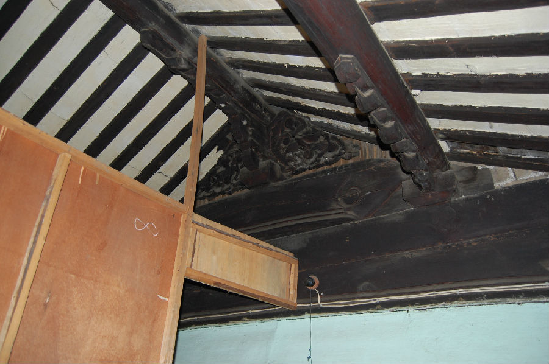

嘉兴市文物保护网 · 市级文物保护点 · 2020-11-03 · 原文

金铭勳老宅位于嘉兴市秀洲区新塍镇石槛3号。据建筑形制和居住人介绍综合判断，此宅建于清代。坐北朝南，占地面积287平方米，通进深25.7米、通面阔11.3米。原为三进，现仅存后二进，一进建国后烧毁，现出租给外地人生产羊毛衫。二进为一层，与三进间有天井。三进为二层，屋内金柱粗大，下有莲花柱石，柱中设有机关可藏物。整宅屋顶为硬山顶，山墙用青砖砌筑，木梁架结构，抬梁式五檩，用料粗大，梁架、门窗等处雕工精美，地面铺设方形青砖。建筑格局保存尚好，门楼、梁架、门窗等处雕工细致，在嘉兴现有的民国时期乡土建筑中属精品，具有较高的历史和艺术价值。2009年公布为嘉兴市文物保护点。